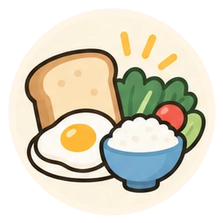

暮らしと治療を、つなげて考える
健康習慣と薬
食事・運動・睡眠、そして薬。健康を守るために、それぞれができること。
「食事や運動を頑張っているのに、検査値がなかなか改善しない」
「薬を飲み始めたら、生活習慣を気にしなくてもいい？」
そんな疑問を感じたことはありませんか。
健康習慣には、薬だけでは得られない大切な効果があります。一方で、体質や病気の状態によっては、生活習慣の改善だけでは十分でないこともあります。
このページでは、健康習慣と薬のそれぞれの役割や関係を、一緒に考えていきます。
A · それぞれの役割を知る
健康習慣と薬をどう組み合わせる？
病気ごとに、食事や運動でできることと、薬が必要になる理由を考えます。
第1回コレステロールの薬。運動を頑張れば飲まなくてもいい？
LDLと中性脂肪の違い、体質や病歴によって変わる治療の目標を知る。
記事を読む- 準備中高血圧：減塩すれば薬はいらない？
- 準備中糖尿病：食事を頑張れば薬はいらない？
- 準備中骨粗鬆症：カルシウムを摂れば薬はいらない？
- 準備中貧血：鉄分を摂れば治る？
- 準備中便秘：食物繊維を摂れば薬はいらない？
B · 生活の中での関わりを知る
健康習慣と薬はどう影響し合う？
- 準備中食事と薬の飲み合わせ
- 準備中空腹時・食後で変わる薬の働き
- 準備中運動と低血糖
- 準備中薬による食欲・栄養状態への影響
- 準備中睡眠習慣と睡眠薬
確認用ページ｜医療者による公開前の確認待ちです。